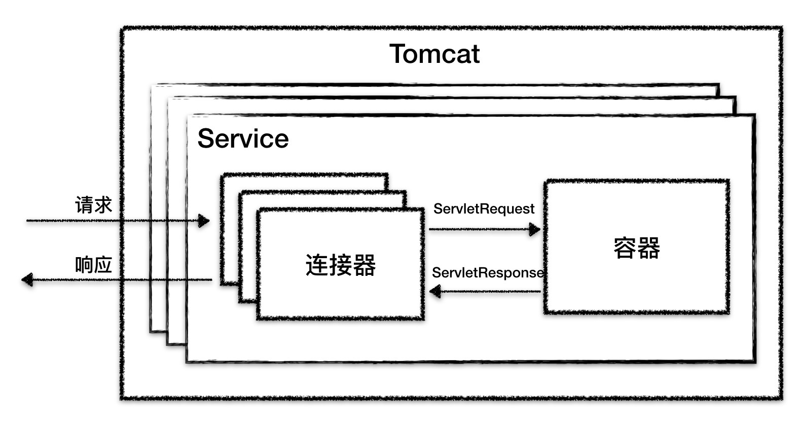
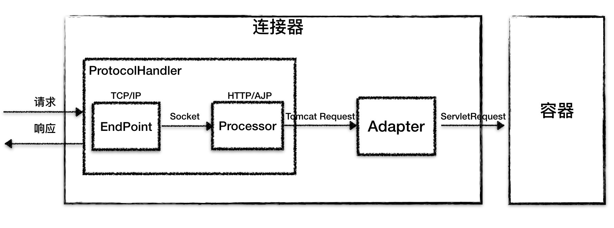
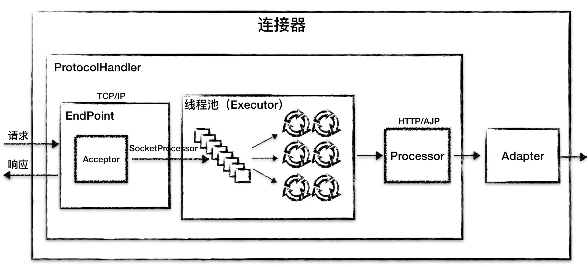

- 00 开篇词 Java程序员如何快速成长？.md.html
- 01 Web容器学习路径.md.html
- 02 HTTP协议必知必会.md.html
- 03 你应该知道的Servlet规范和Servlet容器.md.html
- 04 实战：纯手工打造和运行一个Servlet.md.html
- 05 Tomcat系统架构（上）： 连接器是如何设计的？.md.html
- 06 Tomcat系统架构（下）：聊聊多层容器的设计.md.html
- 07 Tomcat如何实现一键式启停？.md.html
- 08 Tomcat的“高层们”都负责做什么？.md.html
- 09 比较：Jetty架构特点之Connector组件.md.html
- 10 比较：Jetty架构特点之Handler组件.md.html
- 11 总结：从Tomcat和Jetty中提炼组件化设计规范.md.html
- 12 实战：优化并提高Tomcat启动速度.md.html
- 13 热点问题答疑（1）：如何学习源码？.md.html
- 14 NioEndpoint组件：Tomcat如何实现非阻塞I_O？.md.html
- 15 Nio2Endpoint组件：Tomcat如何实现异步I_O？.md.html
- 16 AprEndpoint组件：Tomcat APR提高I_O性能的秘密.md.html
- 17 Executor组件：Tomcat如何扩展Java线程池？.md.html
- 18 新特性：Tomcat如何支持WebSocket？.md.html
- 19 比较：Jetty的线程策略EatWhatYouKill.md.html
- 20 总结：Tomcat和Jetty中的对象池技术.md.html
- 21 总结：Tomcat和Jetty的高性能、高并发之道.md.html
- 22 热点问题答疑（2）：内核如何阻塞与唤醒进程？.md.html
- 23 Host容器：Tomcat如何实现热部署和热加载？.md.html
- 24 Context容器（上）：Tomcat如何打破双亲委托机制？.md.html
- 25 Context容器（中）：Tomcat如何隔离Web应用？.md.html
- 26 Context容器（下）：Tomcat如何实现Servlet规范？.md.html
- 27 新特性：Tomcat如何支持异步Servlet？.md.html
- 28 新特性：Spring Boot如何使用内嵌式的Tomcat和Jetty？.md.html
- 29 比较：Jetty如何实现具有上下文信息的责任链？.md.html
- 30 热点问题答疑（3）：Spring框架中的设计模式.md.html
- 31 Logger组件：Tomcat的日志框架及实战.md.html
- 32 Manager组件：Tomcat的Session管理机制解析.md.html
- 33 Cluster组件：Tomcat的集群通信原理.md.html
- 34 JVM GC原理及调优的基本思路.md.html
- 35 如何监控Tomcat的性能？.md.html
- 36 Tomcat I_O和线程池的并发调优.md.html
- 37 Tomcat内存溢出的原因分析及调优.md.html
- 38 Tomcat拒绝连接原因分析及网络优化.md.html
- 39 Tomcat进程占用CPU过高怎么办？.md.html
- 40 谈谈Jetty性能调优的思路.md.html
- 41 热点问题答疑（4）： Tomcat和Jetty有哪些不同？.md.html
- 特别放送 如何持续保持对学习的兴趣？.md.html
- 结束语 静下心来，品味经典.md.html
- 捐赠
05 Tomcat系统架构（上）： 连接器是如何设计的？
05 Tomcat系统架构（上）： 连接器是如何设计的？
在面试时我们可能经常被问到：你做的XX项目的架构是如何设计的，请讲一下实现的思路。对于面试官来说，可以通过你对复杂系统设计的理解，了解你的技术水平以及处理复杂问题的思路。
今天咱们就来一步一步分析Tomcat的设计思路，看看Tomcat的设计者们当时是怎么回答这个问题的。一方面我们可以学到Tomcat的总体架构，学会从宏观上怎么去设计一个复杂系统，怎么设计顶层模块，以及模块之间的关系；另一方面也为我们深入学习Tomcat的工作原理打下基础。
Tomcat总体架构
我们知道如果要设计一个系统，首先是要了解需求。通过专栏前面的文章，我们已经了解了Tomcat要实现2个核心功能：
处理Socket连接，负责网络字节流与Request和Response对象的转化。
加载和管理Servlet，以及具体处理Request请求。
因此Tomcat设计了两个核心组件连接器（Connector）和容器（Container）来分别做这两件事情。连接器负责对外交流，容器负责内部处理。
所以连接器和容器可以说是Tomcat架构里最重要的两部分，需要你花些精力理解清楚。这两部分内容我会分成两期，今天我来分析连接器是如何设计的，下一期我会介绍容器的设计。
在开始讲连接器前，我先铺垫一下Tomcat支持的多种I/O模型和应用层协议。
Tomcat支持的I/O模型有：
NIO：非阻塞I/O，采用Java NIO类库实现。
NIO.2：异步I/O，采用JDK 7最新的NIO.2类库实现。
APR：采用Apache可移植运行库实现，是C/C++编写的本地库。
Tomcat支持的应用层协议有：
HTTP/1.1：这是大部分Web应用采用的访问协议。
AJP：用于和Web服务器集成（如Apache）。
HTTP/2：HTTP 2.0大幅度的提升了Web性能。
Tomcat为了实现支持多种I/O模型和应用层协议，一个容器可能对接多个连接器，就好比一个房间有多个门。但是单独的连接器或者容器都不能对外提供服务，需要把它们组装起来才能工作，组装后这个整体叫作Service组件。这里请你注意，Service本身没有做什么重要的事情，只是在连接器和容器外面多包了一层，把它们组装在一起。Tomcat内可能有多个Service，这样的设计也是出于灵活性的考虑。通过在Tomcat中配置多个Service，可以实现通过不同的端口号来访问同一台机器上部署的不同应用。
到此我们得到这样一张关系图：

从图上你可以看到，最顶层是Server，这里的Server指的就是一个Tomcat实例。一个Server中有一个或者多个Service，一个Service中有多个连接器和一个容器。连接器与容器之间通过标准的ServletRequest和ServletResponse通信。
连接器
连接器对Servlet容器屏蔽了协议及I/O模型等的区别，无论是HTTP还是AJP，在容器中获取到的都是一个标准的ServletRequest对象。
我们可以把连接器的功能需求进一步细化，比如：
监听网络端口。
接受网络连接请求。
读取网络请求字节流。
根据具体应用层协议（HTTP/AJP）解析字节流，生成统一的Tomcat Request对象。
将Tomcat Request对象转成标准的ServletRequest。
调用Servlet容器，得到ServletResponse。
将ServletResponse转成Tomcat Response对象。
将Tomcat Response转成网络字节流。
将响应字节流写回给浏览器。
需求列清楚后，我们要考虑的下一个问题是，连接器应该有哪些子模块？优秀的模块化设计应该考虑高内聚、低耦合。
高内聚是指相关度比较高的功能要尽可能集中，不要分散。
低耦合是指两个相关的模块要尽可能减少依赖的部分和降低依赖的程度，不要让两个模块产生强依赖。
通过分析连接器的详细功能列表，我们发现连接器需要完成3个高内聚的功能：
网络通信。
应用层协议解析。
Tomcat Request/Response与ServletRequest/ServletResponse的转化。
因此Tomcat的设计者设计了3个组件来实现这3个功能，分别是Endpoint、Processor和Adapter。
组件之间通过抽象接口交互。这样做还有一个好处是封装变化。这是面向对象设计的精髓，将系统中经常变化的部分和稳定的部分隔离，有助于增加复用性，并降低系统耦合度。
网络通信的I/O模型是变化的，可能是非阻塞I/O、异步I/O或者APR。应用层协议也是变化的，可能是HTTP、HTTPS、AJP。浏览器端发送的请求信息也是变化的。
但是整体的处理逻辑是不变的，Endpoint负责提供字节流给Processor，Processor负责提供Tomcat Request对象给Adapter，Adapter负责提供ServletRequest对象给容器。
如果要支持新的I/O方案、新的应用层协议，只需要实现相关的具体子类，上层通用的处理逻辑是不变的。
由于I/O模型和应用层协议可以自由组合，比如NIO + HTTP或者NIO.2 + AJP。Tomcat的设计者将网络通信和应用层协议解析放在一起考虑，设计了一个叫ProtocolHandler的接口来封装这两种变化点。各种协议和通信模型的组合有相应的具体实现类。比如：Http11NioProtocol和AjpNioProtocol。
除了这些变化点，系统也存在一些相对稳定的部分，因此Tomcat设计了一系列抽象基类来封装这些稳定的部分，抽象基类AbstractProtocol实现了ProtocolHandler接口。每一种应用层协议有自己的抽象基类，比如AbstractAjpProtocol和AbstractHttp11Protocol，具体协议的实现类扩展了协议层抽象基类。下面我整理一下它们的继承关系。

通过上面的图，你可以清晰地看到它们的继承和层次关系，这样设计的目的是尽量将稳定的部分放到抽象基类，同时每一种I/O模型和协议的组合都有相应的具体实现类，我们在使用时可以自由选择。
小结一下，连接器模块用三个核心组件：Endpoint、Processor和Adapter来分别做三件事情，其中Endpoint和Processor放在一起抽象成了ProtocolHandler组件，它们的关系如下图所示。

下面我来详细介绍这两个顶层组件ProtocolHandler和Adapter。
ProtocolHandler组件
由上文我们知道，连接器用ProtocolHandler来处理网络连接和应用层协议，包含了2个重要部件：Endpoint和Processor，下面我来详细介绍它们的工作原理。
- Endpoint
Endpoint是通信端点，即通信监听的接口，是具体的Socket接收和发送处理器，是对传输层的抽象，因此Endpoint是用来实现TCP/IP协议的。
Endpoint是一个接口，对应的抽象实现类是AbstractEndpoint，而AbstractEndpoint的具体子类，比如在NioEndpoint和Nio2Endpoint中，有两个重要的子组件：Acceptor和SocketProcessor。
其中Acceptor用于监听Socket连接请求。SocketProcessor用于处理接收到的Socket请求，它实现Runnable接口，在run方法里调用协议处理组件Processor进行处理。为了提高处理能力，SocketProcessor被提交到线程池来执行。而这个线程池叫作执行器（Executor)，我在后面的专栏会详细介绍Tomcat如何扩展原生的Java线程池。
- Processor
如果说Endpoint是用来实现TCP/IP协议的，那么Processor用来实现HTTP协议，Processor接收来自Endpoint的Socket，读取字节流解析成Tomcat Request和Response对象，并通过Adapter将其提交到容器处理，Processor是对应用层协议的抽象。
Processor是一个接口，定义了请求的处理等方法。它的抽象实现类AbstractProcessor对一些协议共有的属性进行封装，没有对方法进行实现。具体的实现有AjpProcessor、Http11Processor等，这些具体实现类实现了特定协议的解析方法和请求处理方式。
我们再来看看连接器的组件图：

从图中我们看到，Endpoint接收到Socket连接后，生成一个SocketProcessor任务提交到线程池去处理，SocketProcessor的run方法会调用Processor组件去解析应用层协议，Processor通过解析生成Request对象后，会调用Adapter的Service方法。
到这里我们学习了ProtocolHandler的总体架构和工作原理，关于Endpoint的详细设计，后面我还会专门介绍Endpoint是如何最大限度地利用Java NIO的非阻塞以及NIO.2的异步特性，来实现高并发。
Adapter组件
我在前面说过，由于协议不同，客户端发过来的请求信息也不尽相同，Tomcat定义了自己的Request类来“存放”这些请求信息。ProtocolHandler接口负责解析请求并生成Tomcat Request类。但是这个Request对象不是标准的ServletRequest，也就意味着，不能用Tomcat Request作为参数来调用容器。Tomcat设计者的解决方案是引入CoyoteAdapter，这是适配器模式的经典运用，连接器调用CoyoteAdapter的sevice方法，传入的是Tomcat Request对象，CoyoteAdapter负责将Tomcat Request转成ServletRequest，再调用容器的service方法。
本期精华
Tomcat的整体架构包含了两个核心组件连接器和容器。连接器负责对外交流，容器负责内部处理。连接器用ProtocolHandler接口来封装通信协议和I/O模型的差异，ProtocolHandler内部又分为Endpoint和Processor模块，Endpoint负责底层Socket通信，Processor负责应用层协议解析。连接器通过适配器Adapter调用容器。
通过对Tomcat整体架构的学习，我们可以得到一些设计复杂系统的基本思路。首先要分析需求，根据高内聚低耦合的原则确定子模块，然后找出子模块中的变化点和不变点，用接口和抽象基类去封装不变点，在抽象基类中定义模板方法，让子类自行实现抽象方法，也就是具体子类去实现变化点。
课后思考
回忆一下你在工作中曾经独立设计过的系统，或者你碰到过的设计类面试题，结合今天专栏的内容，你有没有一些新的思路？
不知道今天的内容你消化得如何？如果还有疑问，请大胆的在留言区提问，也欢迎你把你的课后思考和心得记录下来，与我和其他同学一起讨论。如果你觉得今天有所收获，欢迎你把它分享给你的朋友。
© 2019 - 2023 Liangliang Lee. Powered by gin and hexo-theme-book.